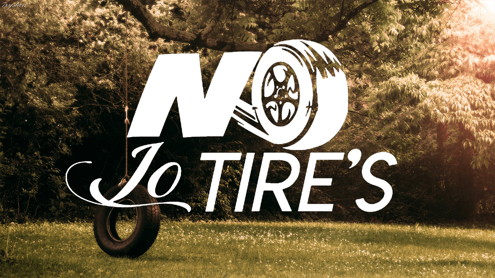
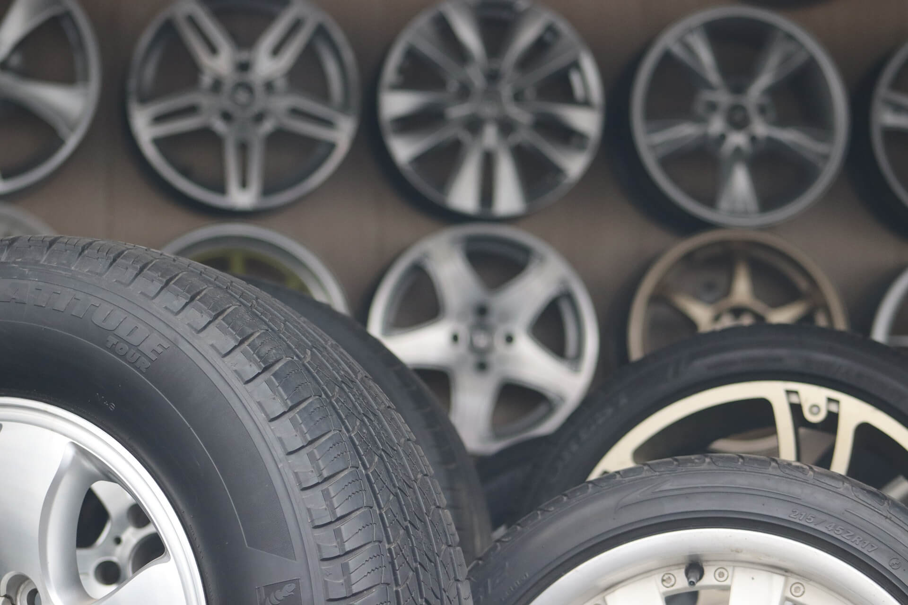
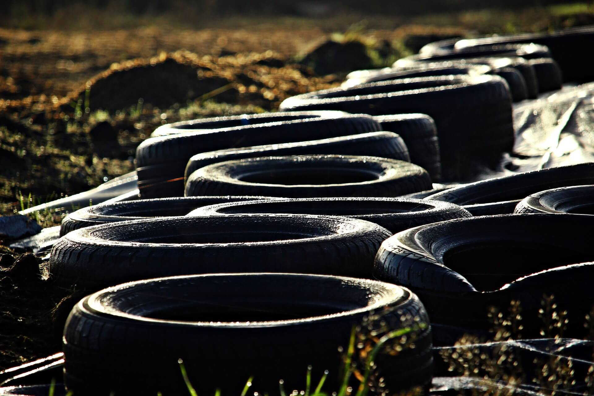
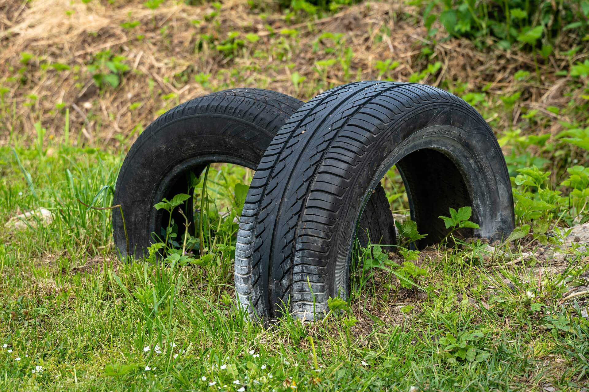

¿Quiénes somos?
No la tires, nosotros nos encargamos
No lo tires es una iniciativa que nace ante la necesidad de encontrar soluciones efectivas frente a las problemáticas ambientales, económicas y sociales que se han generado en torno al incorrecto gestionamiento de los residuos producidos por las llantas que llegan al fin de su vida útil, provocando un alto índice de contaminación, al efectuarse la acumulación de este desecho en zonas urbanas y/o rurales a las que se acceden con frecuencia, ocasionando perjuicios a la salud pública y al medio ambiente que se ve directamente involucrado.
Más que una empresa, somos una alternativa que permitirá la adecuada disposición de la materia prima que se obtiene de las llantas, asegurándonos que esta no sea utilizada posteriormente para fines automovilísticos, si no que se efectúen en la transformación para la creación de productos manufacturados, al proveer dicho material con los respectivos lineamientos establecidos para el propósito de mitigar esta problemática.

Misión
Buscamos generar bienestar a la comunidad al ofrecer servicios de confianza que les permitan tener una gestión eficiente de los residuos generados por las llantas, dándoles un uso sustentable y prolongado.
Visión
Para el 2030 No lo tires será una empresa de amplio reconocimiento a nivel nacional, líder en la recolección y distribución de llantas usadas y el aprovechamiento de sus componentes para el aporte al cuidado del medio ambiente.
Valores
Honestidad
La transparencia y sinceridad con nuestros clientes es primordial y necesaria
Pasión
Somos una organización con un gran entusiasmo por la labor que llevamos a cabo
Integridad
Estamos comprometidos con el respeto al medio ambiente y el bienestar de las personas
Excelencia
Prestamos servicios de gran calidad, y contamos con un personal altamente calificado
Nuestros servicios

Recolección
Para solicitar el servicio de recolección debes realizar la petición con al menos dos días de anticipación, se reciben llantas de diversos calibres hasta un monto máximo de 100 unidades por entrega. Solo debes seguir los siguientes pasos:
1
Comunícate con nosotros a través de nuestros medios de contacto o diligencia el formato en línea
2
Recibe la confirmación de uno de nuestros asesores y programa la fecha de entrega
3
Realiza la entrega de las llantas en los puntos asignados o solicita el servicio de recolección
4
Diligencia el registro de entrega de llantas usadas

Distribución
A través de la distribución de este material nos compromentemos al uso por medio de personas o entidades que busquen su aprovechamiento y reutilización idónea. Solo debes seguir los siguientes pasos:
1
Comunícate con nosotros a través de nuestros medios de contacto o diligencia el formato en línea
2
Establece con uno de nuestros asesores el monto, modo de entrega y otros datos requeridos
3
Especifica el uso y transformación del material suministrado. Recuerda NO las uses con fines automovilísticos
4
Diligencia el formato requerido al momento de recibir las llantas
Noticias


